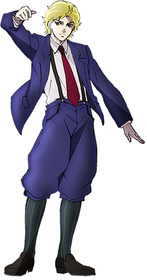
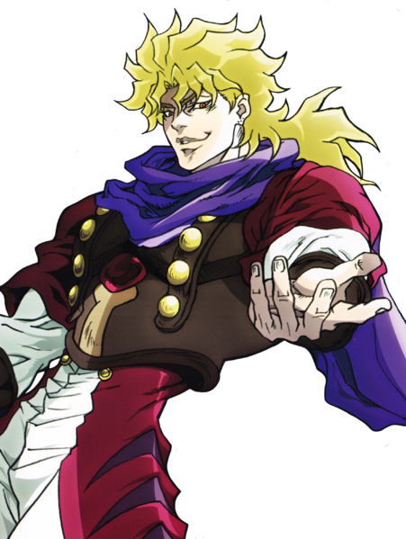
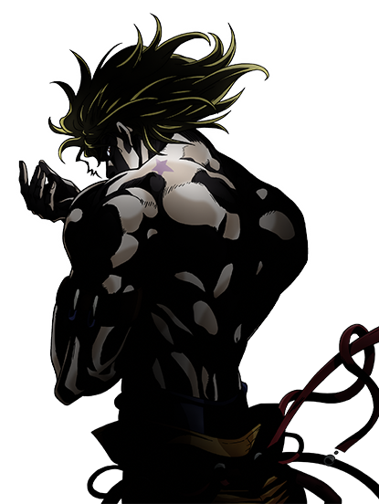
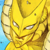
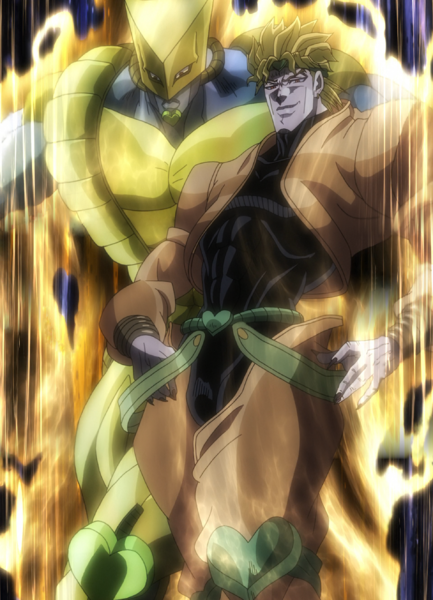

-
Dio Brando
-
Aparência-Infância
-
Aparência-Adulto
-
Stardust Crusaders
Escondido
-
Revelado
-
Forma Final
-
Personalidade
-
Habilidades
-
Aperfeiçoamento
-
Habilidade Pessoal
-
Familiares
“ Inútil, inútil!!! (Muda muda!!!) ”
Dio Brando (ディオ・ブランドー Dio Burandō), mais tarde simplesmente chamado de DIO (ディオ), é o antagonista principal da primeira e terceira parte de JoJo's Bizarre Adventure, Phantom Blood e Stardust Crusaders, também como o póstumo antagonista primário da sexta parte, Stone Ocean. Sua influência é sentida por todas primeiras seis partes da série, com personagens principais como Giorno Giovanna e Enrico Pucci sendo diretamente conectados a ele.
Originalmente um homem de criação humilde porém com uma ambição inigualável, Dio é um vilão de pouca consciência, vasta destreza, e uma fome insaciável por poder. Depois de se tornar um vampiro e depois um usuário de Stand, Dio juntou muitos capangas entre ele e é responsável por muitos dos eventos principais da série, da morte de Jonathan Joestar à abrupta aquisição de poderes de Stand da Família Joestar, e seu legado persiste por toda a série. Dio é o primeiro antagonista principal de JoJo's Bizarre Adventure. Ele também é o pai de Giorno o protagonista de Vento Aureo, e também de um punhado de outros filhos ilegítimos.
 Quando ele inicialmente chega à Mansão Joestar, Dio é visto usando uma vestimenta formal típica daquela era; um casaco azul, camisa formal branca, uma gravata, suspensores, calções, e um par de meias listradas. Ele possui cabelo loiro e um rosto belo. Ele também tem 3 pintas no lóbulo da sua orelha esquerda. Quando lutando, ele veste uma camisa com mangas dobradas, um macacão, e luvas e boxe.
 Além de trocar seu casaco por um colete, as vestimentas de Dio não mudaram muito. Entretanto, seu físico e altura aumentaram significantemente. Durante os eventos de onde Jonathan procura um antídoto para curar a doença de seu pai, Dio veste uma cartola e uma nova e extravagante capa que possui penas saindo dos ombros. Dio passa por mudanças físicas dramáticas após usar a Máscara de Pedra para se transformar em um vampiro. Seu cabelo antigamente limpo se torna mal cuidado e bagunçado, seus olhos ficam mais afiados e adotam um contorno mais escuro, e ele desenvolve presas Suas vestimentas mudam um bocado depois de sua primeira batalha com Jonathan; mais notavelmente é o cachecol em volta de seu pescoço. Ele veste uma camisa duplamente colorida ornamentada e calças combinando, um par largo de botas, braçadeiras, e dois suspensores presos à banda em volta de sua cintura.
 DIO não possui um rosto visível por causa da constante escuridão de sua mansão. Ele possui cabelo na altura de seus ombros e está sem camisa, expondo o corpo musculoso de Jonathan (no qual a cabeça de DIO está presa). Ele veste calças com suspensores, tamancos, e pulseiras brilhantes em ambos pulsos, e joelheiras em formato de coração. No jogo de fliperama JoJo's Bizarre Adventure, sua voz também é super distorcida comparada ao filtro normal para sua outra versão jogável (um efeito criado pelos desenvolvedores para adicionar uma sensação de mistério). Essa forma de DIO é comumente chamada de Shadow DIO no ocidente, e de DIO Encarnação do Mal no Japão.
 Incorporando suas vestes anteriores, DIO veste uma jaqueta com uma regata apertada por baixo, assim como
calças de couro
com uma virilha exposta. Seu rosto não é mais obscurecido, e possui uma fita adornada com corações na
sua cabeça que
combinam com suas joelheiras. Essa é sua forma durante o começo do arco O Mundo de DIO. Na maioria das
mídias em que ele
é retratado, a roupa de DIO é laranja ou amarela.
Ele também usa um colar cobrindo sua cicatriz no pescoço e corações acima de seus pés e nas pernas de
suas calças, mas
ele rapidamente parou de usá-los depois de seu primeiro confronto com Polnareff
Quando perseguindo o grupo Joestar, DIO vestiu uma capa que ele acabou descartando durante seu confronto
com Kakyoin.
Incorporando suas vestes anteriores, DIO veste uma jaqueta com uma regata apertada por baixo, assim como
calças de couro
com uma virilha exposta. Seu rosto não é mais obscurecido, e possui uma fita adornada com corações na
sua cabeça que
combinam com suas joelheiras. Essa é sua forma durante o começo do arco O Mundo de DIO. Na maioria das
mídias em que ele
é retratado, a roupa de DIO é laranja ou amarela.
Ele também usa um colar cobrindo sua cicatriz no pescoço e corações acima de seus pés e nas pernas de
suas calças, mas
ele rapidamente parou de usá-los depois de seu primeiro confronto com Polnareff
Quando perseguindo o grupo Joestar, DIO vestiu uma capa que ele acabou descartando durante seu confronto
com Kakyoin.
DIO chega perto do ápice de sua forma física após drenar o sangue de Joseph Joestar. Sua aparência agora é mais similar à sua forma revelada, com a exceção de sua jaqueta e o lenço em formato de coração que foi destruído pelos ataques de Star Platinum. Ele agora possui um jeito e olhar homicida e perturbado, tendo perdido seu toque suave. Seu cabelo agora é desgrenhado e majoritariamente para cima, enquanto seus lábios são mais escuros e aparentam estarem adornados com batom. Essa é sua forma principal até a última metade do arco O Mundo de DIO, muitas vezes chamada de High DIO em mídias japonesas.
Dio é consistentemente manipulador e violentamente dominante, e já demonstrou repetidamente uma falta de consciência e empatia. As características mais reconhecíveis de Dio são sua ambição sem limites e seu amor pelo poder. Agredido por seu pai e tendo vivido nas condições mais miseráveis,Dio buscou se tornar o ser mais rico e poderoso da Terra. Para fazer isso, Dio usou qualquer coisa ou qualquer um que ele podia para se alcançar de seus objetivos, desconsiderando qualquer senso de moralidade que proibiria o alcance das ações disponíveis a ele. Usando manipulação, sedução, ou simplesmente a violência, Dio constantemente buscou se tornar mais e mais poderoso. Dio gosta de estar em posições de poder e já falou repetidamente sobre o quão bem ele se sente quando em ditas posições. Quando o contrário, Dio nunca tolerou alguém que poderia se igualar a ele em seu poder, e se tornou enfurecido ou profundamente perturbado com o pensamento disso várias vezes.
Naturalmente, Dio é uma pessoa incrivelmente egoista, se preocupando somente com seus próprios interesses, na melhor situação passando despercebido pelos dos outroso, e na pior, os destruíndo. Devido a sua natureza composta, Dio pode e vai manipular e tirar o que ele conseguir de outras pessoas, usando qualquer método, desde que a pessoa realize seu desejo atual. Por causa de seu interesse egoísta nas suas capacidades, Dio é do tipo que é incapaz de amar outra pessoa com todo seu coração.As únicas pessoas que ele pode ser dito ter sentido algum dito de afeto foi por sua mãe, Jonathan Joestar, e Enrico Pucci; Dio reconhecendo o valor de Jonathan como um igual à ele mesmo, e tendo sido amigo de Pucci. Ainda sim, Dio roubou o corpo de seu irmão adotivo e sua amizade com o padre foi provada ser nada além de um plano grandioso para seu próprio benefício.
O Stand de DIO é o The World; um Stand de curto alcance com força e velocidade comparável, senão superior que o Star Platinum de Jotaro Kujo. Depois de aproximadamente um ano após adquirir seu Stand, DIO descobriu sua habilidade de parar o tempo. Inicialmente, ele podia fazer isso apenas por uma curta quantia de tempo, mas pelo final da Parte 3, ele foi capaz de parar o tempo por um máximo de 9 segundos.Essa duração teria continuado à crescer, caso DIO houvesse vivido. Quando parando o tempo, DIO dá a impressão de que ele está se teletransportando ou pelo contrário, se movendo à uma alta velocidade.
| Imagem | Estreia | Tipo | Habilidade | Grito de Batalha |
|---|---|---|---|---|
|  | Capítulo 210 / Sc Episódio 7 | Curto-Alcance | Parar o Tempo |
 Para dá-lo uma vantagem, DIO tentou manter a habilidade do The World um segredo, usando-o apenas em momentos cruciais para confundir um oponente e fazer ataques sorrateiros incompreensíveis, e também contando seu segredo para apenas pessoas de confiança como a Velha Enya e não hesitando em elimina-la o assim que ela remotamente arriscaria informar os Joestars de seu poder de parar o tempo. Entretanto, assim que eles entenderam a habilidade, DIO parou de guardar o segredo e mostrou uma grande confiança na supremacia de seu poder, não ligando sobre seu segredo já que ele estava convencido de que ninguém poderia fazer algo sobre isso. Então, ele começou a deliberadamente parar o tempo contra Jotaro. Graças ao tempo livre de ação garantido pelo The World, DIO criou a possibilidade de instantaneamente se reposicionar para evitar ataques ou posicionar a si mesmo para um ataque, matando inimigos instantaneamente, ou até mudar seus oponentes de lugar para brincar com eles. DIO demonstrou um grande grau de controle sobre o The World, usando-o para batalhar contra o Star Platinum de Jotaro até um empate, mas demonstrando técnicas superiores em combate mano a mano por usar chutes baixos para desequilibrar o Star Platinum ou fintas para dar mais socos que o Star Platinum. Entretanto, sua constituição vampírica significa que DIO nunca demonstrou o mesmo cuidado usando o The World defensivamente já que ele preferia evitar ser golpeado e se regenerar ao sugar sangue.
Inteligência: Dio é naturalmente inteligente, demonstrando astúcia e perceptividade assim como sua imaginação repetidamente.Como uma criança e um adolescente, Dio Brando conseguiu atingir excelência acadêmica com facilidade, tendo planejado graduar-se em uma universidade como um dos melhores estudantes de direito. Do contrário, Dio é um vilão ardiloso e um estrategista proficiente em combate.
Resiliência: Antes de se tornar um vampiro, Dio já era notavelmente um lutador mano-a-mano capaz; uma habilidade que ele diz ter desenvolvido nas favelas de Londres. Um bom esportista amador, durante um jogo de rúgbi enquanto um jovem adulto, ele demonstrou ter grande habilidade atlética (assim como uma massa muscular fantástica).
Carisma: Dio é um individuo astuto e charmoso. Em adição aos usuário de Stand, quem Avdol e Joseph sugerem que ele recruta através de charme ou carisma, ele já seduziu muitas mulheres durante sua vida.
Conhecimento: Durante sua juventude humilde e maturidade tempestuosa, Dio é muitas vezes visto lendo. Durante sua pré-adolescência, ele é visto jogando xadrez com adultos. Em Stone Ocean, em conversas com Enrico Pucci, ele demonstra ter acumulado alguma sabedoria dentro do mundo de Stands. Importantemente, Dio é capaz de formular um plano, contido em seu diário, incorporando vasto conhecimento desconhecido sobre a criação deliberada de Stands com habilidades perfeitamente especificas.
Conexão Espiritual: Depois de roubar o corpo de Jonathan, DIO passou a compartilhar uma conexão espiritual com os descendentes ainda vivos de Jonathan. Ele era instintivamente consciente de suas presenças e bem-estar, permitindo-o os localizar em Cairo. Joseph menciona que DIO provavelmente não consegue distinguir entre ele e Jotaro, e apenas sentir suas presenças.
Dario Brando: Dio odiava seu pai e via Dario apenas como um obstáculo em seu caminho para crescer na sociedade. O ódio de Dio vem do abuso que Dario causou a mãe de Dio assim como ao próprio Dio, devido ao seu alcoolismo, ao ponto dele secretamente envenená-lo até a morte e fazê-lo pensar que estava apenas doente. Ele põem ênfase nisso ao cuspir em seu túmulo antes de ir para a mansão Joestar.
Mãe de Dio Brando: Embora ela não seja vista interagindo com ele, é nítido que Dio amava sua mãe profundamente, e o abuso que foi causado a ela por seu pai foi uma das razões por Dio lentamente e dolorosamente ter matado Dario.
Giorno Giovanna: DIO não demonstra ter interagido com seu filho, Giorno, embora Giorno tenha uma foto dele em sua carteira. É desconhecido de onde Giorno a recebeu ou se ele sabe que tipo de pessoa seu pai era. É importante mencionar que DIO teria drenado o sangue da mãe de Giorno, caso ele não tivesse sido morto pelo Jotaro.
Ungalo,Donatello Versus,e Rikiel: Parecido ao caso de Giorno, as mães desses três homens foram deixadas vivas. Embora nenhum deles herdaram o espirito de Jonathan. Todos três aprenderam da verdadeira identidade de seu pai através de seu encontro fatídico com Pucci.